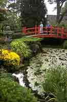

Японские Сады (Japanese Gardens) местечко Tully, графство
Килдэр

Японские сады расположены неподалеку от города Kildare. Сады были заложены в
период 1906 - 1910 годов японцем, садовником Eida и его сыном Minory. Эти сады,
прекрасное творение синтеза природы и человеческих рук, символизируют года жизни
человека, начиная с момента рождения и до момента смерти. Сад The Zen Meditation
Garden был заложен позднее, в 1976 году.